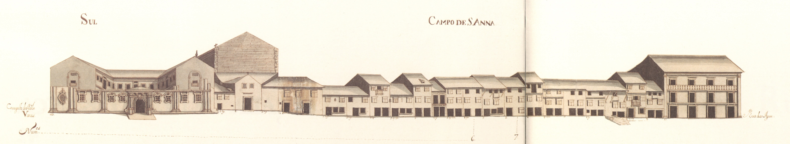

Campo de Santa Ana (Página 41)
Campo de Santa Ana - Norte.
Campo de Santa Ana - Sul. Informações sobre a rua:
Grande espaço aberto em frente à "porta de Souto", onde já na Idade Média
passava uma rua- a "Corredoura"- que levava à "Senhora a Branca" e
"S.Victor", donde partia a estrada para "Chaves" ou "Bom Jesus".
Nos inícios do séc. XVI «era todo cheio de vinhas e árvores e não tinha mais
espaço nem campo saindo da "porta do Souto" para "Santa Maria a Branca"».
O arcebispo D.Diogo de Sousa, «mandou fazer o rocio de Santa Ana...
e comprou estas vinhas e campos até ao padrão onde está uma cruz acerca de Nossa Senhora e meteu
tudo neste rocio de Santa Ana, e do dito padrão para diante alargou aquele campo até Nossa Senhora»,
criando assim um espaço amplo e belo onde «fez de novo a Ermida se Santa Ana, com a sua capela e
escada... e poz de redor delas certas colunas escritas do tempo dos romanos» e «uma Cruz... com
seus degraus e haste».
Era a transformação deste local em amplo espaço urbano. Até essa data apenas existia a capela
de S.Gonçalo, fundada poucos anos antes, em 1500, por D.Jorge da
Costa, além da "rua da Corredoura".
Com a construção de uma casa «à "porta do Souto"...[para] estrebarias e alpendre
com suas colunas para pousarem de praça os Almocreves» e de «um pelourinho de pedra». por ordem
também de D.Diogo, ficava imediatamente criado um polo de atracção
e comércio que pela proximidade com que estava deste campo, não deixaria de o afectar; o que aliás
é visível no desenho das casas existentes no seu extremo Sudoeste.
Em 1652 foi fundado o recolhimento das Beatas da
Penha de França, que seria ampliado em 1720, com mais quartos e uma igreja.
Passados 34 anos instalaram-se aqui os Oratorianos que
lançaram a primeira pedra para a sua igreja em 1689. Em 1739-1766
conseguiram construir o seu magnífico convento e igreja (dos Congregados), onde andou a mão de
André Soares.
Em 1722 a capela de S.Gonçalo foi totalmente reedificada, fundando-se na mesma
data o Recolhimento das Convertidas, em espaço contíguo.
Com todas estas instituições, onde nos permitimos salientar os Oratonianos pela forma com que souberam atrair as populações, "campo de Santa Ana"
foi tomando uma importância na vida da cidade que atingiu o seu máximo em meados do século passado,
e que ainda hoje mantém.
Em 1750, e embora o Mappa nos mostre apenas algumas das suas casas, nota-se bem
a excelente qualidade de muitas delas, sobretudo as do lado Norte (excepto a do prazo n.º5) e a
situada no seu extremo Sudoeste. São amplas, de grande fachada, construídas em pedra e ladeadas por
pilastras, com fartas aberturas, e as janelas do piso nobre transformadas em varandas. O lado Sul
contrasta totalmente; exceptuando a magnífica e grande casa localizada no gaveto com a
"rua de Águas" que tem quatro vãos e três pisos, com uma raríssima varanda corrida no
seu último andar, todas as outras são bastantes diferentes. São habitações na sua maioria de três
pisos (sendo o terceiro sobradado em quatro delas), com amplas portas para possibilitar melhor comércio
e com janelas bracarenses. Curiosamente não encontramos aqui nenhuma casa recoberta de gelosias.
No extremo Sudeste está o convento dos Congregados,
ainda em construção.
Não deixa de ser curioso assinalar que quando na segunda metade do séc.XIX se
reconstruiram muitos destes edifícios, os do lado Norte continuaram a ter grande vulto e dos do Sul
mantiveram também as pequenas proporções de 100 anos atrás.
Das 8 casas do lado Norte e 20 do Sul, eram prazos do Cabido
5 e 2, respectivamente.
O "campo de Santa Ana" tem o nome actual de "avenida Central".
Casas
| Descrição |
|
1 -
Enfiteuta: D.Agostinha de Barros Gavião, enfiteuta principal do casal dos Chãos ou Quinteiro,
sito na freguesia de S.José de S.Lázaro
Uma parte do quintal desta casa é pertença do prazo do casal dos Chãos ou Quinteiro,
sito na freguesia de S.José de S.Lázaro, à face do qual está subemprazado.
|
| |
2 -
Enfiteuta: D.Agostinha de Barros Gavião, enfiteuta principal do casal dos Chãos ou Quinteiro,
sito na freguesia de S.José de S.Lázaro
Uma parte do quintal desta casa é pertença do prazo do casal dos Chãos ou Quinteiro,
a face do qual está subemprazado.
|
| |
3 -
Enfiteuta: D.Agostinha de Barros Gavião, enfiteuta principal do casal dos Chãos ou Quinteiro,
sito na freguesia de S.José de S.Lázaro
Uma parte do quintal desta casa é pertença do prazo do casal dos Chãos ou Quinteiro,
à face do qual está subemprazado.
Confronta, do poente, com casa foreira ao Convento de Vilar de Frades.
|
| |
4 -
Enfiteuta: D.Agostinha de Barros Gavião, enfiteuta principal do casal dos Chãos ou Quinteiro,
sito na freguesia de S.José de S.Lázaro
Uma parte do quintal desta casa é pertença do prazo do casal dos Chãos ou Quinteiro,
à face do qual está subemprazado.
|
| |
5 -
Enfiteuta: D.Agostinha de Barros Gavião, enfiteuta principal do casal dos Chãos ou Quinteiro,
sito na freguesia de S.José de S.Lázaro
Uma parte do quintal desta casa é pertença do prazo do casal dos Chãos ou Quinteiro,
à face do qual está subemprazado. A casa e a parte sul do quintal pagam foro ao
mosteiro de Vilar de Frades. Confronta, do nascente,
com a "rua de S.Gonçalo".
|
| |
6 -
Enfiteuta: Manuel Fernandes Lima
Vincente Francisco, casado com Francisca Ferreira,
paga, de pensões ou foro, 10 reis ao n.º3 da "Rua das Águas", por um
pedaço de terra que se separou do "campo da Rua das Águas" ou do
"Caminho Novo".
A casa e a outra parte do quintal não são foreiras ao cabido.
|
| |
7 -
Enfiteuta: Manuel Fernandes Lima
Gualter da Fonseca Pereira, reitor de
Sta. Maria de Covelo, paga, de pensão ou foro,
50 reis ao n.º3 da "Rua das Águas" ou do "Caminho Novo".
A casa e a outra parte do quintal não são foreiras ao cabido.
|
|